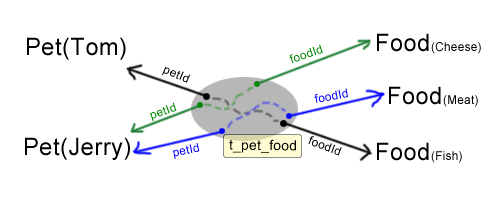

有两张数据表，通过第三张数据表来表示关联关系，我们称之为多对多的映射

如上图，通过一个中间数据表的两个字段，分别指向两个对象的主键，可以实现多对多映射。所以，Pet.foods（一个 List<Food>）或者 Food.pets（一个List<Pet>）就是多对多映射。
在 POJO 类中字段中增加注解 @ManyMany：
@Table("t_food")
public class Food extends Pojo {
@ManyMany(target = Pet.class, relation = "t_pet_food", from = "foodid", to = "petid")
private List<Pet> pets;
public List<Pet> getPets() {
return pets;
}
public void setPets(List<Pet> pets) {
this.pets = pets;
}
}
在 Food 对象中必须存在一个 List<Pet> 类型的字段，你的多对多映射就需要配置在这个字段上。通过 @ManyMany 注解告诉 Nutz.Dao对象 Food 和 Pet 之间的关系，其中：
因此：
比如，下面的例子
我们有两个 POJO
public class Pet {
@Id
public int id;
@Name
public String name;
}
//-------------------------------
public class Food {
@Id
public int id;
@Name
public String name;
}
我们设计了一个关联表关联这两个对象，表示一个宠物爱吃什么样的食物
t_pet_food =================== pid | fid -----+------ 3 | 6 9 | 8
那么我们可以为 Pet 类声明一个多对多关联
public class Pet {
@Id
public int id;
@Name
public String name;
@ManyMany(target=Food.class,
relation="t_pet_food",
from="pid",
to="fid")
public List<Food> foods;
}
可以看到，我们指明了，Pet 类的 foods 字段，通过中间表 t_pet_food 来获取一组 Food 对象。因为 @ManyMany 是声明在 Pet 类的字段上的，那么 Pet 类就被称为所谓的"宿主对象"，而 Food则是所谓的"目标对象"。from 指明关联表的 pid 字段的值代表宿主对象，而 to 指明 fid字段代表目标对象。
看到这里，有的心思缜密的同学肯定会有一个小小怀疑，NutDao 怎么能知道 pid 对应到 Pet 哪个字段呢？靠猜吗？恭喜你，答对了。NutDao 在解析到这个注解的时候，会看看 Pet 类，你是否在某个字段上声明了 @Id 注解，如果没有，则试图看看你有没有在某个字段上声明了 @Name 注解。当然，如果你没有声明 @Id 注解，而用整数字段作为 pid 一定会出错的，你必须把关联表改成:
t_pet_food =================== pid | fid -----------+------ xiaobai | 6 xiaoqiang | 8
这个约定有点死板对吗？并且如果你用 VARCHAR 作为 pid 的数据表字段类型，但是你的 Pet 却声明了 @Id 注解，一样会错，因为 @Id 注解优先。
读到这里，你一定感到很郁闷，因为你实在不想改变你的关联表，没关系，你可以下面一样声明你的 @ManyMany 注解
...
@ManyMany(target=Food.class,
relation="t_pet_food",
from="pid:name",
to="fid")
public List<Food> foods;
...
看，你为 from 声明了一个 "pid:name"，这个冒号后面的，就是大声告诉 NutDao 请用 Pet.name来映射这个 pid 字段。这样 NutDao 就不会自己瞎猜了。
同理，to 也有一样的属性。并且冒号后面的并不用一定是 PK 字段，只要是惟一性字段均可
说到这里，我不得不解释一下，NutDao 主要是通过你提供的注解来分析 POJO 的。我曾经考虑过，是不是少让大家提供几个注解，我自行分析数据表，然后总能做出合理的决定。但是 ... 数据种类实在太多了，各自有各自的脾气，从植物学的角度来说，这很有可能是一个一望无际的大坑，如果我那么做了，估计我会有相当长的一段时间在坑里幸福的遨游，所以我收起了自己的胆量，弱弱的给出了一组注解，以便我能用更少的代码做更多的事情。当然，就 @ManyMany 这个用法，用冒号分隔，通过注解指明映射字段，我想应该还是可以被多数人接受的。
本 POJO 类的 @Many 映射，可以不止声明在 List 对象上，它还可以声明在
详情，可以参看 一对多映射 的相关描述
如果你已经实现准备好了这样的对象：
Food food = new Food("Fish");
List<Pet> pets = new ArrayList<Pet>();
pets.add(new Pet("XiaoBai");
pets.add(new Pet("XiaoHei");
food.setPets(pets);
那么你可以一次将 food 以及它对应的 pets 一起插入到数据表中，并在关联表中插入对应的记录
dao.insertWith(food, "pets");
Nutz.Dao 会根据正则表达式 "pets" 寻找可以被匹配上的映射字段（只要声明了 @One, @Many, @ManyMany 任何一个注解，都是映射字段）并根据注解具体的配置信息，执行相应的 SQL。比如上面的操作，会实际上：
执行 SQL : INSERT INTO t_food (name) VALUES("Fish");
执行 SQL 获取 最大值： SELECT MAX(id) FROM t_food // 假设返回的值是 6
循环 food.pets
执行 SQL: INSERT INTO t_pet (name) VALUES("XiaoBai");
执行 SQL 获取 最大值： SELECT MAX(id) FROM t_pet // 假设返回的值是 97
执行 SQL 插入关联: INSERT INTO t_pet_food (foodid, petid) VALUES(6, 97);
...
这里通过 SELECT MAX 来获取插入的最大值，是默认的做法，如果你想修改这个默认做法，请参看 关于主键一章。
当然，你要想选择仅仅只插入映射字段的话，你可以：
dao.insertLinks(food,"pets");
如果 food.id 的值为 6，那么上述操作实际上会执行：
循环 food.pets
执行 SQL: INSERT INTO t_pet (name) VALUES("XiaoBai");
执行 SQL 获取 最大值： SELECT MAX(id) FROM t_pet // 假设返回的值是 97
执行 SQL 插入关联: INSERT INTO t_pet_food (foodid, petid) VALUES(6, 97);
...
看，并不会插入 food 对象。
如果你已经存在了 food 和 pets 对象，你仅仅打算将它们关联起来，那么你可以
dao.insertRelation(food,"pets");
如果 food.id 的值为 6，那么上述操作实际上会执行：
循环 food.pets 执行 SQL 插入关联: INSERT INTO t_pet_food (foodid, petid) VALUES(6, 97); ...
看，仅仅只会插入 food 和 pets 的关联
仅仅获取映射对象：
Food food = dao.fetch(Food.class, "Fish"); dao.fetchLinks(food, "pets");
这会执行操作：
执行 SQL: SELECT * FROM t_food WHERE name='Fish'; // 如果 food.id 是6
执行 SQL: SELECT * FROM t_pet WHERE id IN (SELECT petid FROM t_pet_food WHERE foodid=6)
但是 Nutz.Dao 没有提供一次获取 food 对象以及 pets 对象的方法，因为，你完全可以把上面的两句话写在一行上：
Food food = dao.fetchLinks(dao.fetch(Food.class, "Fish"), "pets");
然后，你可以通过 food.getPets() 得到 Nutz.Dao 为 food.pets 字段设置的值。
同时更新 food 和 pet
dao.updateWith(food, "pets");
这会执行
执行SQL: UPDATE t_food .... 循环 food.pets 并依次执行SQL: UPDATE t_pet ...
仅仅更新 pets
dao.updateLinks(food, "pets");
这会执行
循环 food.pets 并依次执行SQL: UPDATE t_pet ...
同时删除 food 和 pets
dao.deleteWith(food, "pets");
仅仅删除 pets
dao.deleteLinks(food, "pets");
清除 pets
dao.clearLinks(food, "pets");
清除同删除的区别在于，清除只会执行一条 SQL 删除 t_pet_food 的记录，但是 t_pet 和 t_food 表中的数据不会被删除而删除则不仅会清除 t_pet_food 里的记录，还会逐个调用 dao.delete 来删除对象。